Abrir todos os gabaritos Ocultar gabaritos Recomeçar Imprimir
Os enunciados aparecem em recortes dos materiais fornecidos. Clique na imagem para ampliar. As respostas foram calculadas para este material; não são transcrições de gabaritos oficiais.
Fotografias · Razão · questão 01
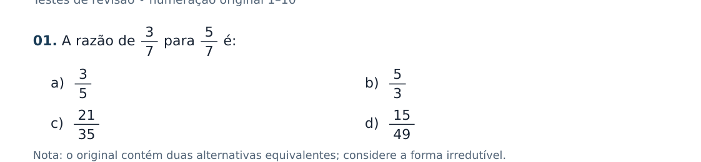
Selecione a letra correspondente às alternativas da imagem. Clique no enunciado para ampliar.
A B C D
Conferir alternativa
🔽 Ver gabarito comentado Resposta: A ou C 3 7 5 7 3 7 7 5
= 21 35 3 5
As alternativas A e C são equivalentes. A é a forma irredutível, mas ambas estão matematicamente corretas.
Fotografias · Razão · questão 02
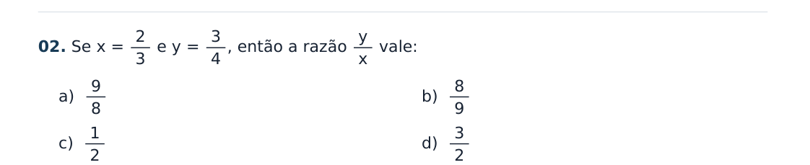
Selecione a letra correspondente às alternativas da imagem. Clique no enunciado para ampliar.
A B C D
Conferir alternativa
🔽 Ver gabarito comentado Resposta: A y/x = 3 4 2 3
= 3 4 3 2 9 8
Fotografias · Razão · questão 03
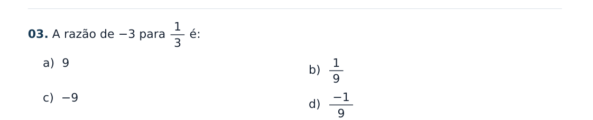
Selecione a letra correspondente às alternativas da imagem. Clique no enunciado para ampliar.
A B C D
Conferir alternativa
🔽 Ver gabarito comentado Resposta: C −3 ÷ 1 3
= −9.
Fotografias · Razão · questão 04
Selecione a letra correspondente às alternativas da imagem. Clique no enunciado para ampliar.
A B C D
Conferir alternativa
🔽 Ver gabarito comentado Resposta: C x = 1 5 20 8 20 40 1 2
y = (−2/3)² = 4/9.
x/y = 1 2 9 4 9 8
Fotografias · Razão · questão 05
Selecione a letra correspondente às alternativas da imagem. Clique no enunciado para ampliar.
A B C D
Conferir alternativa
🔽 Ver gabarito comentado Resposta: D Razão = 800 1000
Divida ambos por 200: 4 5
Fotografias · Razão · questão 06
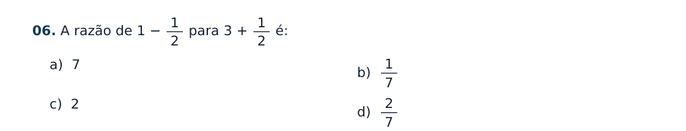
Selecione a letra correspondente às alternativas da imagem. Clique no enunciado para ampliar.
A B C D
Conferir alternativa
🔽 Ver gabarito comentado Resposta: B 1 − 1/2 = 1/2.
3 + 1/2 = 7/2.
1 2 7 2 1 2 2 7 1 7
Fotografias · Razão · questão 07
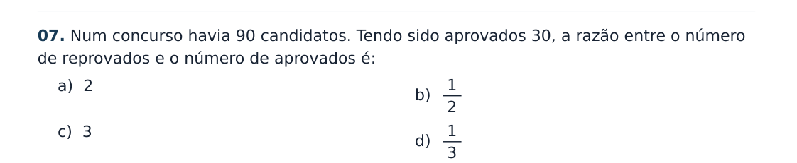
Selecione a letra correspondente às alternativas da imagem. Clique no enunciado para ampliar.
A B C D
Conferir alternativa
🔽 Ver gabarito comentado Resposta: A Reprovados = 90 − 30 = 60.
Razão = 60/30 = 2.
Fotografias · Razão · questão 08
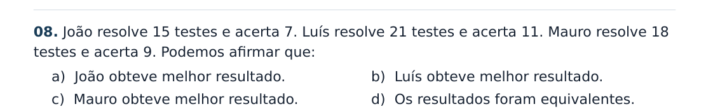
Selecione a letra correspondente às alternativas da imagem. Clique no enunciado para ampliar.
A B C D
Conferir alternativa
🔽 Ver gabarito comentado Resposta: B João: 7/15 ≈ 46,67%.
Luís: 11/21 ≈ 52,38%.
Mauro: 9/18 = 50%.
Luís obteve o maior percentual.
Fotografias · Razão · questão 09
Selecione a letra correspondente às alternativas da imagem. Clique no enunciado para ampliar.
A B C D
Conferir alternativa
🔽 Ver gabarito comentado Resposta: D 100 m = 10.000 cm.
Escala = 5/10.000 = 1/2.000.
Fotografias · Razão · questão 10
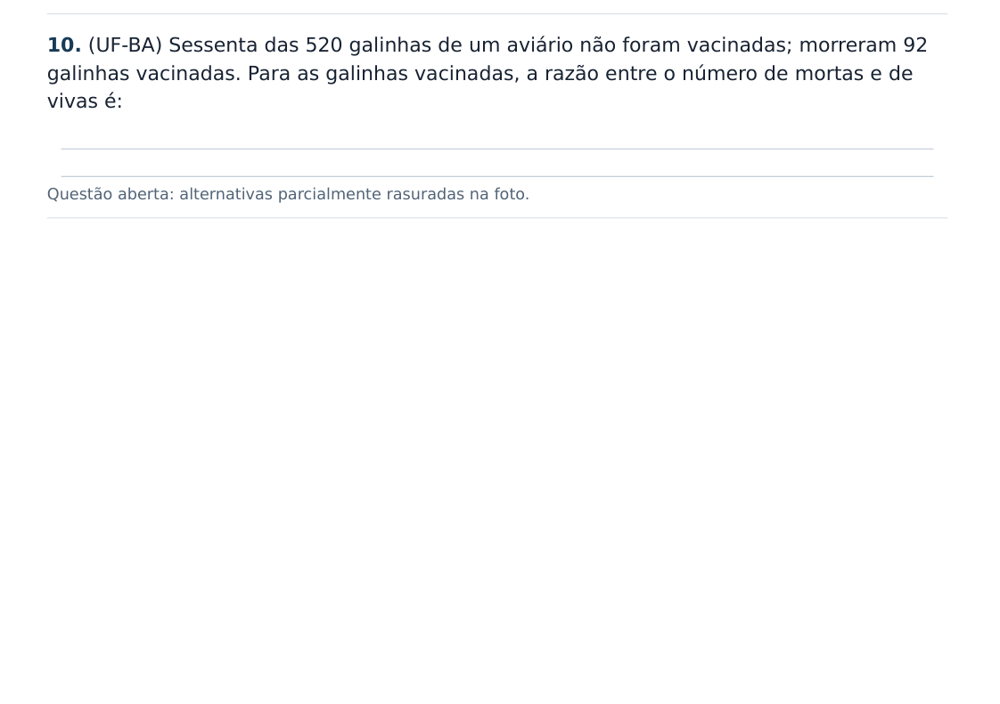
Sua resposta: Confira também o desenvolvimento no gabarito; respostas em formatos equivalentes podem exigir conferência manual.
Conferir resposta
🔽 Ver gabarito comentado Resposta: 1/4 Vacinadas: 520 − 60 = 460.
Vivas vacinadas: 460 − 92 = 368.
Mortas/vivas = 92/368 = 1/4.
Fotografias · Proporção · questão 01
Selecione a letra correspondente às alternativas da imagem. Clique no enunciado para ampliar.
A B C D
Conferir alternativa
🔽 Ver gabarito comentado Resposta: C 20/100 = x/45.
100x = 20 × 45 = 900.
x = 9.
Fotografias · Proporção · questão 02
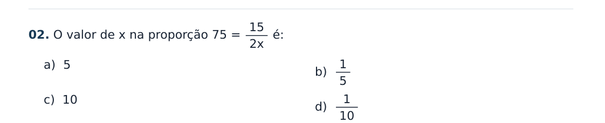
Selecione a letra correspondente às alternativas da imagem. Clique no enunciado para ampliar.
A B C D
Conferir alternativa
🔽 Ver gabarito comentado Resposta: D 75 = 15/(2x).
150x = 15.
x = 15/150 = 1/10.
Fotografias · Proporção · questão 03
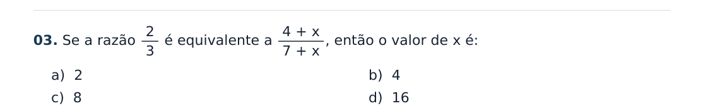
Selecione a letra correspondente às alternativas da imagem. Clique no enunciado para ampliar.
A B C D
Conferir alternativa
🔽 Ver gabarito comentado Resposta: A 2(7+x) = 3(4+x).
14 + 2x = 12 + 3x.
x = 2.
Fotografias · Proporção · questão 04
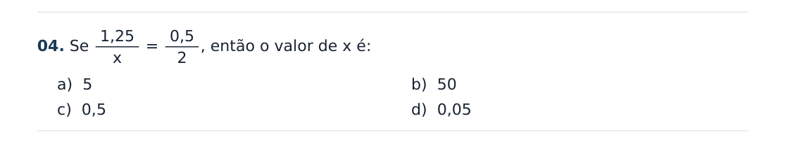
Selecione a letra correspondente às alternativas da imagem. Clique no enunciado para ampliar.
A B C D
Conferir alternativa
🔽 Ver gabarito comentado Resposta: A 1,25/x = 0,5/2.
0,5x = 1,25 × 2 = 2,5.
x = 2,5/0,5 = 5.
Fotografias · Proporção · questão 05
Selecione a letra correspondente às alternativas da imagem. Clique no enunciado para ampliar.
A B C D
Conferir alternativa
🔽 Ver gabarito comentado Resposta: D 1 + 3/4 = 7/4.
2 × 7/4 = 7/2.
x/(7/2) = 2/5.
x = (7/2) × (2/5) = 7/5.
Fotografias · Proporção · questão 06
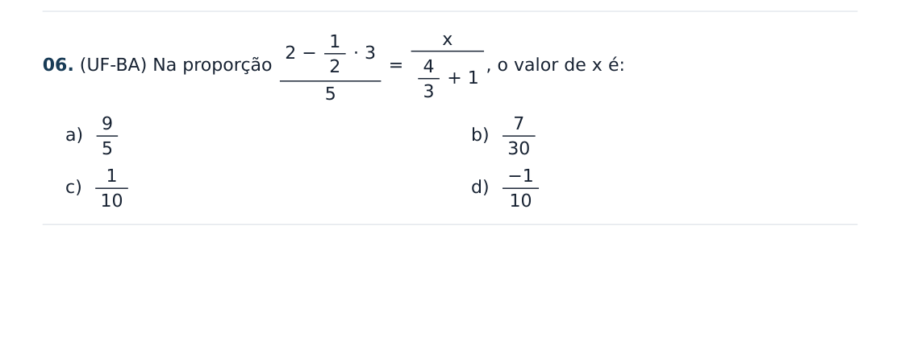
Selecione a letra correspondente às alternativas da imagem. Clique no enunciado para ampliar.
A B C D
Conferir alternativa
🔽 Ver gabarito comentado Resposta: B 1/2 × 3 = 3/2.
2 − 3/2 = 1/2.
(1/2) ÷ 5 = 1/10.
4/3 + 1 = 7/3.
x = (1/10) × (7/3) = 7/30.
Fotografias · Proporção · questão 07
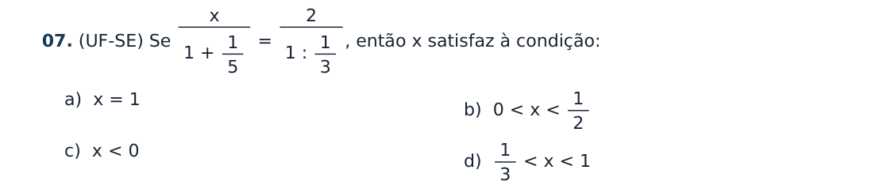
Selecione a letra correspondente às alternativas da imagem. Clique no enunciado para ampliar.
A B C D
Conferir alternativa
🔽 Ver gabarito comentado Resposta: D 1 + 1/5 = 6/5.
1 ÷ (1/3) = 3.
x/(6/5) = 2/3.
x = (6/5) × (2/3) = 4/5.
1/3 < 4/5 < 1.
Fotografias · Proporção · questão 08
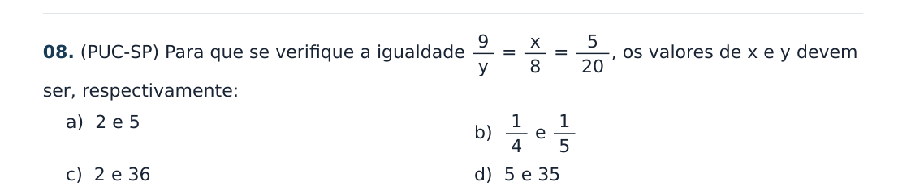
Selecione a letra correspondente às alternativas da imagem. Clique no enunciado para ampliar.
A B C D
Conferir alternativa
🔽 Ver gabarito comentado Resposta: C 5/20 = 1/4.
x/8 = 1/4 → 4x = 8 → x = 2.
9/y = 1/4 → y = 36.
Fotografias · Proporção · questão 09
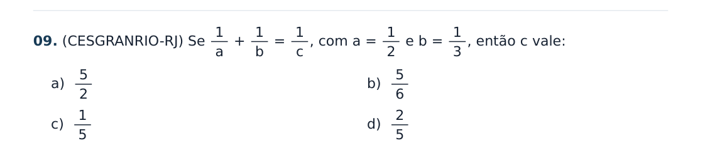
Selecione a letra correspondente às alternativas da imagem. Clique no enunciado para ampliar.
A B C D
Conferir alternativa
🔽 Ver gabarito comentado Resposta: C 1/a = 1/(1/2) = 2.
1/b = 1/(1/3) = 3.
1/c = 2 + 3 = 5.
c = 1/5.
Fotografias · Proporção · questão 10
Selecione a letra correspondente às alternativas da imagem. Clique no enunciado para ampliar.
A B C D
Conferir alternativa
🔽 Ver gabarito comentado Resposta: C Menor = 3k e maior = 8k.
8k + 2 × 3k = 42.
14k = 42 → k = 3.
Maior = 8 × 3 = 24.
Fotografias · Proporção · questão 11
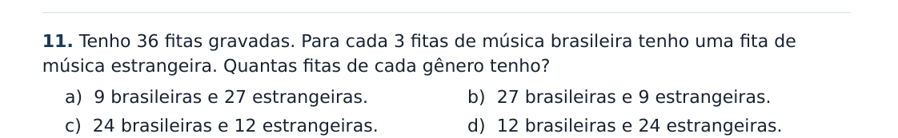
Selecione a letra correspondente às alternativas da imagem. Clique no enunciado para ampliar.
A B C D
Conferir alternativa
🔽 Ver gabarito comentado Resposta: B 3 + 1 = 4 partes.
36/4 = 9 fitas por parte.
Brasileiras = 3 × 9 = 27
estrangeiras = 9.
Fotografias · Proporção · questão 12
Selecione a letra correspondente às alternativas da imagem. Clique no enunciado para ampliar.
A B C D
Conferir alternativa
🔽 Ver gabarito comentado Resposta: C 1,2 m = 120 cm.
Fator = 120/20 = 6.
Comprimento = 35 × 6 = 210 cm = 2,1 m.